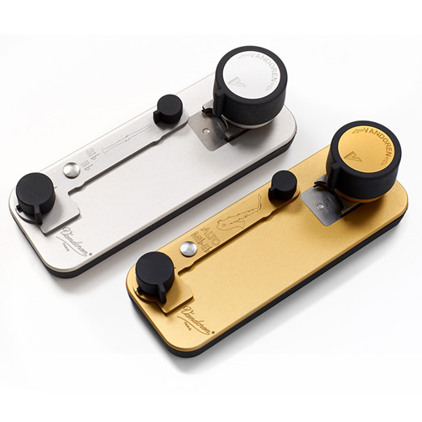
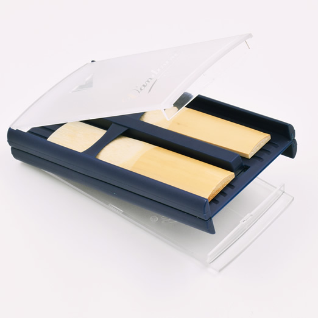
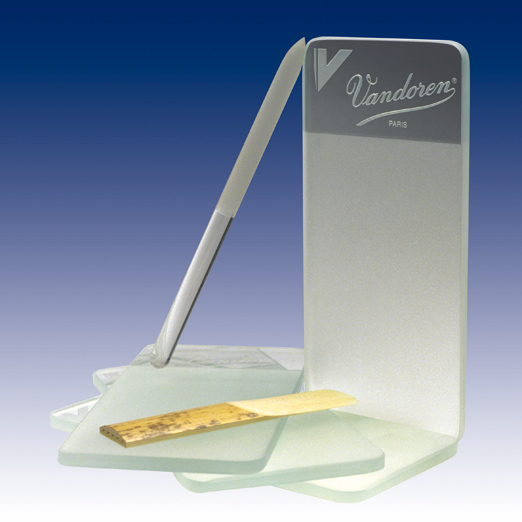

アクセサリー
バンドーレン・アクセサリー
リードカッター

| 楽器 | 対象リード | 品番 |
|---|---|---|
| B♭／A クラリネット | トラディショナル | RT10 |
| V.12 | RT19 | |
| 56ルピック, V21 | RT50 ※ | |
| ホワイトマスター | RT16 ※ | |
| ブラックマスター | RT18 ※ | |
| V21 ジャーマン, V21 オーストリアン | RT17 ※ | |
| アルトサクソフォン | トラディショナル, V.12, Java | RT21 |
| Java RED, V16, ZZ | RT21RT ※ | |
| V21 | RT81 ※ |
リードの製造で培われた数々の技術から考案されたバンドーレンリードカッターはリードの先端をカットするための専用工具です。
この最先端の精密工具は、右利き・左利きのどちらの方にも使用できます。
また、リードの先端が薄く柔らかくなりすぎたり、欠けてしまったリードをカットすることで、もとどおりの、左右均整のとれた状態を取り戻すことができます。
初心者からプロのプレイヤーまで、全てのシングルリードプレイヤーにお使いいただきたい道具です。
鉄のパンチで型抜きされ、1ミリの100分の1の精度で調整でき、最大15,000回まできれいにカットできることを保証します。
●リードの形状によってカッターのモデルが異なっております。
●使用方法につきましては、こちらのPDFをご覧ください。＞＞
※印のモデルは受注発注となります。
ユニバーサルハーネス サクソフォンストラップ
バンドーレンのユニバーサル・ハーネスは重い楽器も非常に軽く感じさせ、演奏時に自由に動くことができます。
演奏家と生理学者の協力により、気持ちよく、またよりうまく演奏できるように各部がデザインされました。
重い楽器も軽々と感じさせてくれる初めてのハーネスです。
①ショルダーストラップ 手作りでソフトですから、首への負担を軽減してくれます。
②紐 呼吸を妨げることなく楽器を絶妙に保持してくれます。
③スタビライジングロッド 奏者の動きに素早く反応し、楽器の重量を分散させてくれます。
④サポートベルト 腰に巻きつけて、立奏時でも座奏時でも完璧にバランスをとってくれます。
FNH100：ソプラノ、アルト、テナー、バリトンサクソフォン用
FNH101：特定のバスクラリネット、ファゴット用に紐を長くしたバージョン ※受注生産
演奏家と生理学者の協力により、気持ちよく、またよりうまく演奏できるように各部がデザインされました。
重い楽器も軽々と感じさせてくれる初めてのハーネスです。
①ショルダーストラップ 手作りでソフトですから、首への負担を軽減してくれます。
②紐 呼吸を妨げることなく楽器を絶妙に保持してくれます。
③スタビライジングロッド 奏者の動きに素早く反応し、楽器の重量を分散させてくれます。
④サポートベルト 腰に巻きつけて、立奏時でも座奏時でも完璧にバランスをとってくれます。
FNH100：ソプラノ、アルト、テナー、バリトンサクソフォン用
FNH101：特定のバスクラリネット、ファゴット用に紐を長くしたバージョン ※受注生産
| ハンドメイドのショルダーパッドは首への負担を軽減するため、柔らかい素材が採用されています。 | 呼吸を制限することなく、大切な楽器を慎重に固定するコード | スライドにより長さを調整できる背面の可動式ロッドは、奏者の動きと共に独立した機能で、楽器の重量を相殺します。 |
| 立奏・座奏にかかわらず、負荷をウェスト中心部に集中させバランスをとるサポートベルト | 全てのサクソフォンに使用でき、子供から大人まで幅広くサイズ調整が可能です。特にバリトン奏者にお薦めします。 ※ウェストベルト用アタッチメント、収納ポーチ付属 |
|
リードケース（4枚用）
Quad-pack
VQP06：B♭,E♭クラリネットリード用、ソプラノサクソフォン、アルトサクソフォンリード用
■サイズ：縦85mmｘ横48mmｘ厚さ17mm ■重さ：24g
リードを保護するカバー付き。胸ポケットに楽々入る軽量コンパクトサイズなので、本番ステージ用にも安心です。
リード接地⾯に溝が施されており、通気性にも優れリードを⻑持ちさせます。
VQP06：B♭,E♭クラリネットリード用、ソプラノサクソフォン、アルトサクソフォンリード用
■サイズ：縦85mmｘ横48mmｘ厚さ17mm ■重さ：24g
リードを保護するカバー付き。胸ポケットに楽々入る軽量コンパクトサイズなので、本番ステージ用にも安心です。
リード接地⾯に溝が施されており、通気性にも優れリードを⻑持ちさせます。

リードケース（6枚用）
VRC620：アルトクラリネットリード用、アルトサクソフォンリード用
各仕切りに番号が振ってあり、リードをきちんと収めることができるエレガントな青いケースです。
リード接地面に溝を施すことにより通気性にすぐれ、リードを長持ちさせます。胸ポケットやクラリネットケースに入れられる便利な大きさです。
各仕切りに番号が振ってあり、リードをきちんと収めることができるエレガントな青いケースです。
リード接地面に溝を施すことにより通気性にすぐれ、リードを長持ちさせます。胸ポケットやクラリネットケースに入れられる便利な大きさです。
リードケース（8枚用）
VRC810：B♭,E♭クラリネットリード用、ソプラノサクソフォンリード用
各仕切りに番号が振ってあり、リードをきちんと収めることができるエレガントな青いケースです。
リード接地面に溝を施すことにより通気性にすぐれ、リードを長持ちさせます。胸ポケットやクラリネットケースに入れられる便利な大きさです。
各仕切りに番号が振ってあり、リードをきちんと収めることができるエレガントな青いケースです。
リード接地面に溝を施すことにより通気性にすぐれ、リードを長持ちさせます。胸ポケットやクラリネットケースに入れられる便利な大きさです。
ハイグロリードケース（6枚用)
HRC10： E♭, B♭用クラリネットリード用、ソプラノ,アルトサクソフォンリード用
HRC20： バスクラリネットリード用、テナー,バリトンサクソフォンリード用
HRCK： 補充用キット（湿度計用ディスク2＋スポンジ1）
バンドーレン社では、適度な湿度を保ちながら、換気も可能な新しいリードケースを開発致しました。
大切なリードを劣化から守る特別な機能が施されています。
HRC20： バスクラリネットリード用、テナー,バリトンサクソフォンリード用
HRCK： 補充用キット（湿度計用ディスク2＋スポンジ1）
バンドーレン社では、適度な湿度を保ちながら、換気も可能な新しいリードケースを開発致しました。
大切なリードを劣化から守る特別な機能が施されています。
ガラス製リード・リサーフェイサーとリードスティック
 RR200：リードリサーフェイサとリードスティックのセット
RR202：リードスティックのみ
このリードリサーフェイサーは水洗いできる強化ガラス製で、ほぼ永久的に摩滅しない表面にエッチング加工が施されています。
トクサからヒントを得たリードスティックも、エッチング加工が施されており、リードを各プレイヤーの好みにカスタマイズすることができます。
RR202：リードスティックのみ
このリードリサーフェイサーは水洗いできる強化ガラス製で、ほぼ永久的に摩滅しない表面にエッチング加工が施されています。
トクサからヒントを得たリードスティックも、エッチング加工が施されており、リードを各プレイヤーの好みにカスタマイズすることができます。
超極細繊維製クラリネット・スワブ
SW200: B♭クラリネット用
SW300: バスクラリネット用
絹のデリカシーと吸収性に超極細繊維の耐久性を合わせたバンドーレンのクラリネット・スワブは、楽器に最適です。クラリネットの繊細な仕上げを保護しながら隅々まで掃除ができるように、優しい繊維でデザインされています。
－高品質な、特別デザインの超極細繊維製です。
－重りの付いた強度の高いヒモ付き。
－洗剤で簡単に洗濯できます。
－高い耐久性で長持ちします。
SW300: バスクラリネット用
絹のデリカシーと吸収性に超極細繊維の耐久性を合わせたバンドーレンのクラリネット・スワブは、楽器に最適です。クラリネットの繊細な仕上げを保護しながら隅々まで掃除ができるように、優しい繊維でデザインされています。
－高品質な、特別デザインの超極細繊維製です。
－重りの付いた強度の高いヒモ付き。
－洗剤で簡単に洗濯できます。
－高い耐久性で長持ちします。
超極細繊維製ポリッシング・クロス
PC300
バンドーレン超極細繊維製スワブと同じ材質と特徴を持ちます。ゴールド、シルバー、ラッカー仕上げのポリッシングに理想的です。
バンドーレン超極細繊維製スワブと同じ材質と特徴を持ちます。ゴールド、シルバー、ラッカー仕上げのポリッシングに理想的です。
マウスピース・ポーチ
P100
ネイビー･ブルーのフェルト製で、マウスピース、キャップ、リガチャーを保護します。
ネイビー･ブルーのフェルト製で、マウスピース、キャップ、リガチャーを保護します。
マウスピース・ポーチ（ブラック・ネオプレン製）
P200: E♭, B♭用クラリネットマウスピース用、ソプラノ,アルトサクソフォンマウスピース用
P201: バスクラリネットマウスピース用、テナー,バリトンサクソフォンマウスピース用
大切なバンドーレンマウスピースを収納できる、保護性のあるネオプレン製のマウスピースポーチです。
P201: バスクラリネットマウスピース用、テナー,バリトンサクソフォンマウスピース用
大切なバンドーレンマウスピースを収納できる、保護性のあるネオプレン製のマウスピースポーチです。
マウスピース・クッション
VMC6+
透明クッション、6枚入り、
厚さ0.35mm（0.014インチ）
マウスピースを歯による摩耗から保護します。
また、マウスピースクッションを貼ることにより、前歯にかかる負担も軽減されます。
透明クッション、6枚入り、
厚さ0.35mm（0.014インチ）
マウスピースを歯による摩耗から保護します。
また、マウスピースクッションを貼ることにより、前歯にかかる負担も軽減されます。
マウスピース・クッション
VMCX6+
黒色クッション、6枚入り、
厚さ0.8mm（0.032インチ）
マウスピースを歯による摩耗から保護します。
また、マウスピースクッションを貼ることにより、前歯にかかる負担も軽減されます。
黒色クッション、6枚入り、
厚さ0.8mm（0.032インチ）
マウスピースを歯による摩耗から保護します。
また、マウスピースクッションを貼ることにより、前歯にかかる負担も軽減されます。
チューニングリング
VTR100
A=440 マスターズマウスピース用
1.5及び1.75mm
チューニングリング2個セット
※受注発注となります。
A=440 マスターズマウスピース用
1.5及び1.75mm
チューニングリング2個セット
※受注発注となります。
コルク・グリス
CG100
アップルブロッサム（りんごの花）がさわやかに香るこのグリスは、楽器のコルクの滑りを良くし、保護し、柔軟さを保ち完全に密閉します。
バンドーレンのコルク・グリスは学生、プロの間で長年にわたり愛用されています。
アップルブロッサム（りんごの花）がさわやかに香るこのグリスは、楽器のコルクの滑りを良くし、保護し、柔軟さを保ち完全に密閉します。
バンドーレンのコルク・グリスは学生、プロの間で長年にわたり愛用されています。
Vネック・ストラップ（スタンダード／デラックス）
VSS20：スタンダード（S, M／L, XL）
幅広の黒いポリプロピレン（PP）を採用し、演奏者に非常に大きな快適感を与えてくれます｡
VSS22：デラックス（S, M／L, XL）
人間工学的に設計されストレスを感じさせることなく、また首や背中を疲労させることなく、しっかりと楽器を支えます。 幅広くなめらかな革とマイクロファイバーを採用したネックパッドは、シリコーンと形状記憶素材で強化されており、痛みを感じさせることなく快適に演奏することができます。
両モデルとも3種類（S，M/L，XL）があり、どちらもイージーアジャストメント・メカニズムと丈夫な 接続フックによりオン、オフが非常に素早くできます。
幅広の黒いポリプロピレン（PP）を採用し、演奏者に非常に大きな快適感を与えてくれます｡
VSS22：デラックス（S, M／L, XL）
人間工学的に設計されストレスを感じさせることなく、また首や背中を疲労させることなく、しっかりと楽器を支えます。 幅広くなめらかな革とマイクロファイバーを採用したネックパッドは、シリコーンと形状記憶素材で強化されており、痛みを感じさせることなく快適に演奏することができます。
両モデルとも3種類（S，M/L，XL）があり、どちらもイージーアジャストメント・メカニズムと丈夫な 接続フックによりオン、オフが非常に素早くできます。